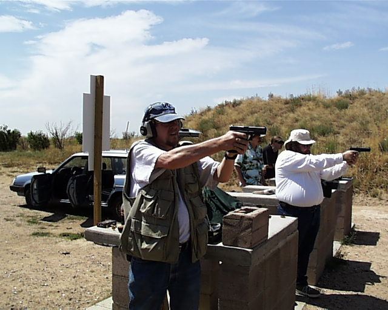

A Day at the Range
L. Neil Smith's Blog
August 18, 2003, continuedPage 13

Me and Ryllie's Glock again. Ryllie's taking the picture.
Roger Owen's shooting a Ciener .22 adapter for a 1911, but it wasn't working very well that day. We're also having trouble with the Ciener system he gave Ryllie for her Glock. The magazines are too big for the well.
We'll fix it.
To Page 12 Page 13 To Page 14